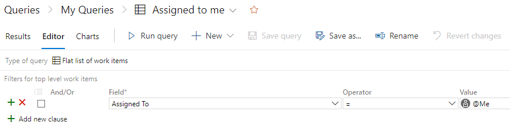

Azure DevOps'ta "Queries Editor" (Sorgu Düzenleyici), iş öğesi sorgularını oluşturmak, düzenlemek ve yönetmek için kullanılan grafik arayüzdür.
İşte Sorgu Düzenleyici'nin özellikleri:
Sorgu Düzenleyici, sorgularınızı düzenlemenizi ve kategorilere ayırmanızı sağlayan bir hiyerarşik yapı sunar. Sorgularınızı proje düzeyinde veya altında alt sorgular olarak düzenleyebilirsiniz. Bu şekilde, sorgularınızı daha iyi organize edebilir ve yönetebilirsiniz.
Sorgu Düzenleyici, Sorgu Tasarımcısı adı verilen grafik arayüzle sorgularınızı oluşturmanıza olanak tanır. Sorgu Tasarımcısı, sorgunuzun temel yapılandırmasını, filtrelerini, gruplamalarını, sıralamalarını ve diğer özelliklerini belirlemenizi sağlar. Bu, kullanıcı dostu bir arayüzle sorgularınızı hızlı ve kolay bir şekilde oluşturmanızı sağlar.
Sorgu Düzenleyici, iş öğelerini filtrelemek için çeşitli seçenekler sunar. Sorgularınıza filtreler ekleyerek iş öğelerini duruma, atanan kişiye, önceliğe, etiketlere veya diğer özelliklere göre filtreleyebilirsiniz. Bu sayede istediğiniz iş öğelerini daha spesifik bir şekilde bulabilirsiniz.
Sorgu Düzenleyici, sorgunuzu çalıştırdığınızda elde edilecek sonuçları önizlemenizi sağlar. Bu, sorgunuzun doğru sonuçlar üretip üretmediğini kontrol etmenize olanak tanır. Önizlemede, iş öğelerinin liste görünümünü ve seçilen sütunları görebilirsiniz.
Sorgu Düzenleyici, sorgunuzun davranışını ve görüntülenme şeklini özelleştirmenize olanak tanır. Örneğin, sorgunuzun sayfa boyutunu ayarlayabilir, sütunları özelleştirebilir ve sıralama seçeneklerini belirleyebilirsiniz.
Sorgu Düzenleyici, kullanıcı dostu bir arayüzle iş öğelerini sorgulama ve filtreleme işlemlerini kolaylaştırır. Sorgularınızı düzenleyebilir, özelleştirebilir ve yönetebilirsiniz, böylece projenizdeki verilere daha iyi erişim sağlayabilirsiniz.